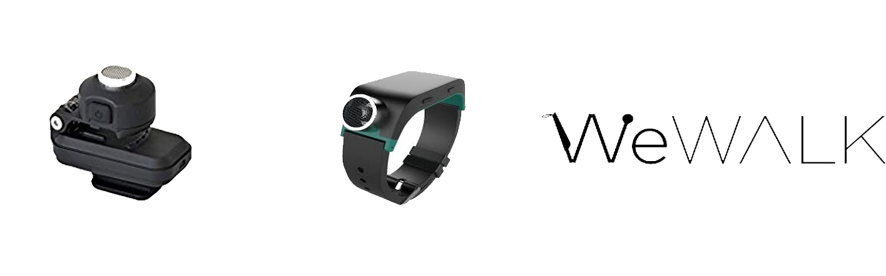

Navigational Aid for runners who are blind - TRIDENT
Overview
As a research assistant at the university, I worked on this project to develop a prototype for runners who are blind. This was done in collaboration with another university and a large automobile manufacturer as part of the Mobility for All project. Currently, we are evaluating the prototype created.
- Categories: Accessibility, Wearable Technology, User-Centered Design
- User Base: Runners who are blind
- Project Timeline: 2020 - Present
- Team Members: 4 students and 1 faculty
About the Prototype
TRIDENT stands for Tri-Positional Detection and Navigational Technology. The key features of the system include enhanced awareness of surroundings, detection of obstacles above and below the waist, modes for long and short range detection and choice of output. These features have been determined from interviews conducted with blind joggers and runners.
My Role
As the main user researcher and one of two people who built the device, I successfully built a prototype using the insights and data I collected from generative research conducted initially.
Goals
Dealing with a niche audience made us go beyond the normal research and look in depth for solutions more than one. The end goal? Building an effective and efficient prototype that the users can wear while running. Qualitative research enabled us to look at the major pain-points, build a user-friendly device that enables the runner to avoid obstacles in their path.
The project
From initial discussions, we observed that the main problems arise when obstacles with moving obstacles and ones at head height. Often, they find it hard to concentrate on the path because of the obstacles. To alleviate some of these standing problems, our team at the University of Maryland, Baltimore County decided to build a device for blind runners through the user centered approach . The project was done under the watchful eye of Dr.Ravi Kuber.
Base Requirements
Their base requirements is that they want a device that relies on haptics and uses sensors to detect obstacles. In addition to that, the requirements point to the devices being non-invasive and portable so that it does not hinder their run in any way possible.
Assumptions
We made some assumptions before the team started the whiteboarding process. Some of the assumptions varied from the runners like Santiago running regularly, using tethers while running, using existing technology, finding technology usage difficult while running, etc.,
Research Questions
Post going through the initial requirements. Each member of the team came up with list of initial research questions. and compiled later.
- Can the users effienciently look for the information they need after using our prototype?
- Can the prototype clearly distinguish obstacles in each path?
- Can the prototype be tested on any given terrain yielding efficient results?
- Would the users be able to connect and run the setup successfully should there be a reassembly
- How easily can the prototype be worn by the prospective users?
Recruitment
We recruited participants using the snowball sampling technique.
Demographic: Individuals who are blind and go on runs. They can be first timers, regular marathon runners, or run with a tether.
Total number of users involved throughout the project: 11
Gender: Any
Ethnicity: Any
Devices: Mobile (Android and IOS) and others (BuzzClip, SUNU Band, etc.,)
METHODOLOGY
Longitudinal study to assess the manner in which participants interact with technology while running and develop a prototype for the same using the human-centered design process. Done in phases.
- First Phase: Collect Literature on the different prototypes created by different researchers and on the different products in the market.
- Second Phase: Brainstorm and come up with possible scenarios related to running.
- Third Phase: 60 minute interviews with 5 participants.
- Fourth Phase: Build the prototype from the data and insights collected.
- Final Phase: Evaluate the prototype and iterate on the design.
Literature Review
In the first phase of the project, the team collected several works that related to the devlopment of prototypes for individuals who are blind. This rigorous search helped the team to understand the development from other researchers perspective.

Product Analysis
Along with the literature on different research projects, the team also looked at some of the different products available on the market. We even ordered a couple of devices (The Buzzclip, SUNU Band) to try out and give an additional opinion.
User Interviews
We interviewed participants ranging from first time runners to seasoned marathon runners. The feedback was collected, analysed, coded for reference.
It depends on how well you know the trail. I’ve gotten to the point where they just. Give me a really short warning. I’ll be OK because I’m prepping for it anyways. If that makes sense.
The DeafBlind cannot hear the bells as a location indicator. Again the SUNU band already does this and it was tested in a crowded race type environment
Scenario Development
Multiple scenarios were developed over a peeriod to ensure that major situations are covered and the prototype addresses them.
Affinity Diagramming
Once we had all the data points ready, the team sat down and created an affinity diagram to draw themes and prioritize them. Collaboration was done on a tool called MIRO .
INSIGHTS
- Multiple obstacle detection: Participants want an array of obstacles to be detected and not just a single obstacle.
- A non-intrusive device that is multimodal: Participants do not want a device that impedes them in any way either physically or mentally in any way while running
- Presentation of multiple haptic feedback: Participants are looking at receiving an array of feedback in the form of haptics while approaching an obstacle.
- Detection of obstacles: Participants look forward to learning about the obstacle from a short distance away.
- Weight Constraints: Participants do not want to carry something heavy while running as it impedes their run.
- Terrain: Participants want the device to work in multiple terrains, and not just track and field.
Prototype Design and Development

We were now at a stage where we could build the prototype based on the insights. We chose 3 different sensors (Infrared, Ultrasonic, and LIDAR) to incorporate into the device, and from the research material gathered, we decided to go with a RUNNING BELT. As one of the two prototype developers on the team, I set myself a deadline to get everything up and running. Within two months, it was ready for review.
The sensors are integrated in a way to mirror what we were working towards – A running belt worn by runners who are blind to detect obstacles. Velcro is used for ease of use. A headband is an add on to the device to detect obstacles at head height and has it's output generated on a wrist band to avoid head related issues.
We named the device, the TRIDENT. TRIDENT stands for Tri-Positional Detection and Navigational Technology.
USER FEEDBACK
If we can move on to kind of more specifics of how the device responds. So, if it's clear that we have awareness of the user you can get objects in front of you to the sides and behind you.
Yeah, I guess my question is, how we find the vibration. Is it just going to drop off if you move to the left or right of the obstacle?
How heavy the pieces are and how bulky it is but I think that's something to definitely consider. Especially if it's a battery-operated.
The Standout Features
What sets our prototype apart and user oriented?
This low cost device consists of a variety of sensors to offer a wider detection range. The output works on haptics and can be used by Deaf and Hard of hearing people as well. The users do not have to spend money on devices that are expensive and bear only one sensor as this prototype is a handy alternative. We anticipate that people in Low-and Middle income countries would be able to afford the device should it hit the market.This device can be used for regular walking as well, extending from the runners.
90% of the users who tried this prototype mentioned that they would like to use it for their day to day activities.
5/5 users liked the idea of a non-intrusive belt that can be used to detect obstacles.
80% of the users feel that the belt is lightweight and can be used as an alternative to the devices currently available.
NEXT STEPS
Obstacle course evaluation
Obstacle course evaluation
We will be running an evaluation study with an obstacle course to draw further insights for future iterations. You can find the evaluation document here .
A/B Testing
A/B Testing to be done on the different editions of the prototype.